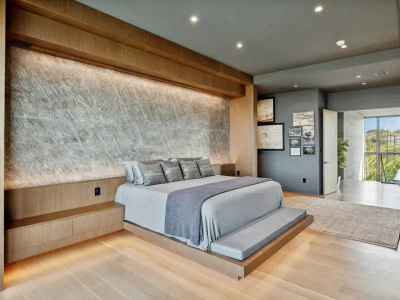

Interiorismo
Distribución, materiales, color, mobiliario e iluminación para cada ambiente.

Diseñamos interiores completos o ambientes puntuales, como la sala, la cocina o el dormitorio principal.
El proyecto incluye la distribución del mobiliario, la paleta de materiales y colores, el diseño de iluminación y una lista de compras con proveedores y precios.
Si lo desea, coordinamos la compra, la fabricación y la instalación hasta dejar el espacio listo para usarse.
Proyectos relacionados

Departamento Cañada
Interiorismo
Un departamento nuevo en zona 15 recibió muebles a medida, iluminación por capas y una paleta de maderas y textiles cálidos.
Honorarios de referencia
Consulta de diseño
Desde Q 1,500 / visita
Para decisiones puntuales sobre un ambiente o una compra.
Incluye
- Visita de dos horas en su espacio
- Recomendaciones por escrito
- Paleta de colores y materiales
- Lista de compras sugerida
- Recomendado
Interiorismo
Desde Q 180 / m²
Ambientes completos, listos para comprar y fabricar.
Incluye
- Distribución del mobiliario
- Renders de cada ambiente
- Planos de muebles a medida
- Plano de iluminación
- Lista de compras con proveedores
- Dos rondas de cambios
- A la medida
Proyecto completo
Desde Q 320 / m²
Arquitectura, interiores y obra con un solo equipo.
Incluye
- Anteproyecto con renders
- Planos constructivos e instalaciones
- Gestión de licencia
- Presupuesto de obra y comparación de ofertas
- Supervisión de obra
- Bitácora semanal
Honorarios de referencia en quetzales, sin IVA. No incluyen el costo de la obra ni del mobiliario, que se pagan directamente al contratista y a los proveedores. Le confirmamos el precio en una propuesta por escrito.
¿Le interesa este servicio?
Solicite una propuesta en línea, escríbanos por WhatsApp o llámenos.
Cómo llegar al estudio Google Maps